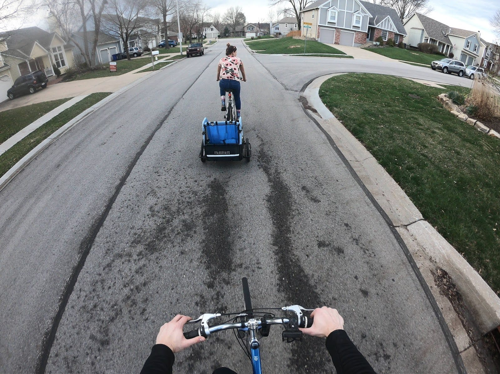
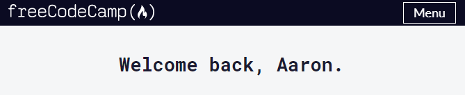
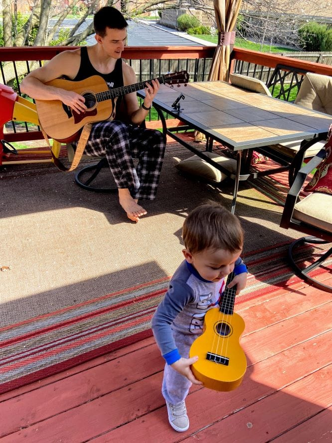
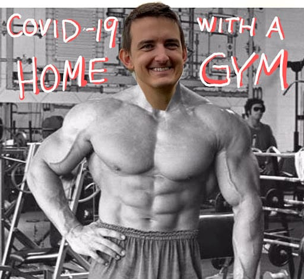

Nearly everyone in the United States has a huge opportunity right now.
COVID-19
I’ve heard COVID-19 is “like a long, slow September 11th, 2001”. I think that equating the two is disrespectful, but I understand the point. There was a “before”, there will be an “after”, and those two realities are not going to be the same.
My heart goes out to everyone. Those who have the virus, those who are taking care of someone with it, those who are stepping up in our hospitals and help centers around the country, and those whose livelihoods have been so affected. I wonder about the long-lasting implications of this time. Not only because the entire world will have been effected by a virus, but also because of what realizations dawn on everyone as individuals. Maybe some good will come out of this?
Maybe being “stuck at home” wasn’t really so bad? Maybe you look at your credit card statement in a month and say “huh, turns out if we are at home we don’t spend anything.”
Maybe you realize doing Facetime with your family is actually pretty easy, then you wind up spending more quality time together than you did before.
Maybe working from home makes you realize that you simultaneously hate your commute and get more quality work done from home anyway.
Maybe people wash their hands. Maybe.
I’m no economist. I’m no philosopher. I’m not read into socioeconomic trends. I’m a casual observer of society at best… but it has felt to me like we (collectively) have been trying to live “more, more, more” for so long - that a not insignificant portion of the population will stand to benefit from having this heavy weight tied around our collective ankles. I hope we learn to make more with less; to look deeper, not broader. I hope this terrible tragedy for so many can bring about realizations of great meaning for many more.
With the hours in your day, what are you doing? Are you pursuing something that you’ve always wanted to do, but haven’t “had the time”? Are you hugging those vital few people you can? Are you calling your parents? Or are you digging through the backlogs of Netflix, Hulu, HBO, Disney+, YouTube, and whatever else may have something to numb the mind until this period passes.
I for one am not going to let this time go to waste. I’m going to work harder and love deeper than ever before.
What Aaron is Doing
I’m happy to say this post is not aspirational. This post takes place two weeks into the Pandemic because I’ve been busy already doing these things.
Family

I am staying at home with my wife and son. I am doing my absolute best to spend as much quality time with them as possible. This is a very cool, definitely very brief and awesome time in our lives. My wife and I are young, healthy, and happy to be working on fulfilling projects in the same room as each other. We did a puzzle, and had a good time doing it. We take turns (informally) enabling the other to work deeply on something important to us. We are watching a show, true, but not letting that show consume our lives. Tiger King only has 7 episodes anyway. She’s helping me learn guitar. We’re working on a video project together (more on that later). My kid is healthy, happy, awesome, and at a really fun age. He’s got independence, but still wants to be around us. He’s got words, but still asks for help opening the jar of pretzels. He’s young enough to let me work in the office, but old enough to realize when I pop downstairs that he’s missed me. He’s growing and learning new thing every single day. We think he may have said his first sentence today - he told his mom that dad was in the potty. Good deal.
Studying

I’ve been learning a ton. I’m very much interested in becoming more and more fluent with JavaScript. I’m working toward becoming a full-stack web developer. This overlaps with my job nicely, but is something I’d be doing for fun if it didn’t. I’m about halfway through the curricula at FreeCodeCamp. I’m actively looking at creating a Data Journal that’s not got Google Sheets as its backend. This morning I played around with Glitch. I’m going to keep doing that after I’m done with this. I assume that my webpage link there will break at some point. There’s not much to see anyway.
Writing

My 30 Day Challenge for April is to finish transitioning Gillespedia from what it was to what it will be: a part of this website.
Gillespedia was an idea I had about a year ago, which was an extension of an idea I had right after I graduated college (nearly a decade ago, maybe I’m not so young?) At that point I wanted to do a comprehensive review of everything I ever learned in school, rewriting it in my own words. I was scared I’d forget it all. Well, for a lot of it I have. But I lost motivation, because I wasn’t learning new things - just summarizing old ones. Also I got a job and other priorities started coming up.
After I became a father, I got renewed interest in the idea of repackaging the contents of my brain in some way that could be passed onto my son (or whoever else might want it). This time, though, I wouldn’t try to do a shotgun all-at-once approach. I’d write about topics on an adhoc basis. If something was interested and warranted more research, I’d do that. This is the basis for what I’ve been working on in Notion for the past 10+ months.
Long story short, I decided to build a “second brain” for my permanent notes. I’m currently summarizing my own summaries of books I’ve read. I plan to transition the (worthwhile) book reviews to Gillespedia, and to move my original works over as well. It will live, at least for the foreseeable future, in this website via the link at the top. Also at Gillespedia.com.
Art

I’ve been learning the guitar for the past two months. Just recently I got over a plateau and it genuinely started to become fun. This is a very exciting thing for me. I wanted to prove to myself that I could utilize my own best practices to accomplish something I’ve always found difficult. I’d like to think I’ve already done it - what’s important now is that I’m having fun developing some pinch of competence.
Also Melissa and I are working on a video project to document just how much fun the Gillespies had over quarantine. That will be on here eventually. We’re still just getting started, unfortunately.
Exercise

Oh, and my half-planned half-randomly-assigned exercise scheme has continued to be satisfying. I’m getting stronger and leaner than ever before. I mean, I am those things. It’s weird looking in the mirror.
Top 5: Resources to Help You Use This Time
- Make art. Got a pencil & paper? Draw! Got an instrument? There’s a ton of ways to practice in your jammies. I’ve been using Yousician on my iPhone pretty successfully for the past two months. Only paid for the premium version just now, because I realized it was worth it to me.
- Learn anything you want buy auditing free courses from Udemy, or going down YouTube rabbit holes.
- Take up a hobby of writing. If you have a journal, use it! If you don’t, you don’t need one. I’ve been keeping an incredibly extensive journal for the past 2500 days in Google Spreadsheets. You can use anything.
- Learn to code. Costs nothing. A ton of resources. I have used a lot, but FreeCodeCamp is all you need. If not that, Udacity. Or Udemy. Or Coursera. Or Lynda. There’s so many options.
- Check your local library’s website. Find their app [Libby, Axis 360, RbDigital]. Use it. I just signed up for a Library Card for the KC Library from this desk with Libby. For free. Took 1 minute.
My fear is that I’ll look back on this as the best time of my life, and there will (hopefully) never be another reason to be shut in for weeks again.
Quotes
“Only boring people get bored.”
- I’ve heard this in multiple places & Google is giving credit to all sorts of people. I don’t know who said it first.